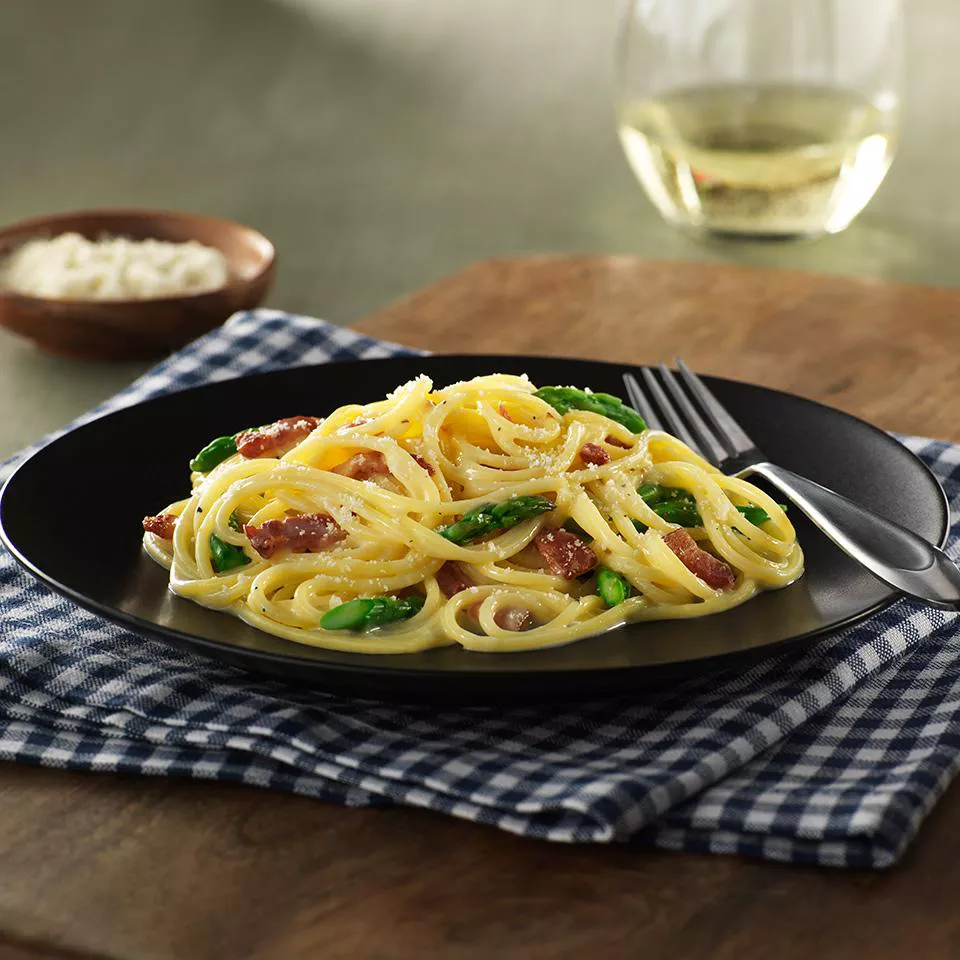

Carbonara

Gluten Free Carbonara
This gluten-free carbonara is a take on a classic Italian pasta dish and serves as an easy, delicious gluten-free dinner! Try this scrumptious carbonara recipe with gluten-free spaghetti flavored with crispy bacon, asparagus, and Parmesan cheese.
This gluten-free carbonara is a take on a classic Italian pasta dish and serves as an easy, delicious gluten-free dinner! Try this scrumptious carbonara recipe with gluten-free spaghetti flavored with crispy bacon, asparagus, and Parmesan cheese.
- 1 (12 ounce) box Barilla® Gluten Free Spaghetti
- ½ cup chopped onion
- 1 cup chopped raw bacon
- 1 tablespoon vegetable oil
- 1 bunch asparagus, trimmed, cut 1 inch long on a bias
Passos
Passo1
- Bring a large pot of water to a boil. Cook pasta according to package directions. Drain and set aside.
Passo 2
- Meanwhile, sauté onion, bacon, and oil in a skillet over medium-high heat until bacon is rendered and onions are translucent, about 5 minutes. Add asparagus; sauté for 3 to 4 minutes, then season with salt and pepper.
Passo 3
- Mix yolks with cheese in a bowl. Season with salt and pepper; set aside.
Homepage